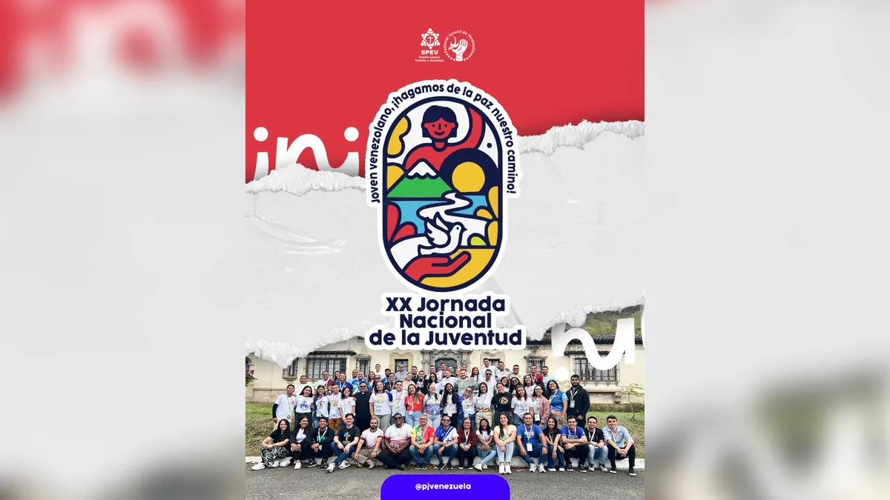

Jornada Nacional de la Juventud 2026
XX Jornada Nacional de la Juventud, con el lema «Joven venezolano, ¡hagamos de la paz nuestro camino!». La celebración central fue el 15 de febrero y cada diócesis la vivió con su propio calendario.

Datos del evento
- Fecha
- Celebración central el 15 de febrero de 2026; actividades diocesanas del 7 de febrero al 7 de marzo
- Modalidad y lugar
- Presencial · Nacional, en cada diócesis, arquidiócesis y vicariato
- Organiza
- Pastoral Juvenil de Venezuela, adscrita al Centro de Laicos, Familia y Juventud, con la CEV
- Estado
- Realizado
Cómo fue
La Pastoral Juvenil de Venezuela convocó a los jóvenes de todas las diócesis, arquidiócesis y vicariatos. Entre el 7 de febrero y el 7 de marzo hubo misas, convivencias, caminatas y actividades formativas, deportivas y culturales, la mayoría el 14 y el 15 de febrero.
La Jornada tuvo cuatro pilares: conversión, sinodalidad, paz y reconciliación. Se inspiró en el mensaje del papa León XIV para la Jornada Mundial de la Paz, «Hacia una paz desarmada y desarmante». Se concretó en la Mesa de la Sinodalidad, una vigilia de oración, un itinerario de confesión y el foro «Jóvenes Constructores de Puentes».
Qué se hizo
- Conversaron en la Mesa de la Sinodalidad.
- Rezaron en una vigilia y recorrieron un itinerario de confesión.
- Debatieron en el foro «Jóvenes Constructores de Puentes».
- Celebraron misas, encuentros formativos y deportivos y caminatas en las diócesis, según el calendario de la nota.
Quién participó
- La Pastoral Juvenil de Venezuela y los jóvenes de las diócesis, arquidiócesis y vicariatos que cita la nota.
Galería

Jornada Nacional de la Juventud 2026, Nacional, en cada diócesis, arquidiócesis y vicariato, celebración central el 15 de febrero de 2026; actividades diocesanas del 7 de febrero al 7 de marzo. Afiche de la XX Jornada Nacional de la Juventud, «Joven venezolano, ¡hagamos de la paz nuestro camino!», con foto de grupo de jóvenes. Crédito: CEV Medios, fuente: con información del Centro de Laicos, Familia y Juventud del SPEV.